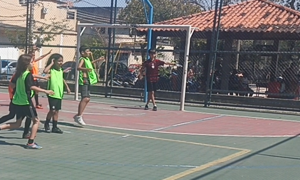

O jogo começou equilibrado. Após cobrança de lateral, Samuel defende, a bola sobra para Fabiano que chuta por cima do gol. Em seguida, Enzo cruza para Nathan que sem marcação, faz o primeiro gol da partida. A zaga do Flamengo se atrapalha e Nathan aproveita a oportunidade para fazer o seu segundo gol. Fabiano faz uma ótima defesa, cara a cara com Arthur Pierre, salvando o que seria o terceiro gol do Fla Crias. Ângelo cobra escanteio e Arthur Pierre emenda de primeira para o gol, aumentando o placar para o Fla Crias. O Flamengo tenta reagir e Davi André chuta forte para grande defesa do goleiro Samuel. Davi Delgado recebe um passe na cobrança de escanteio, chuta forte para o gol, mas o goleiro Samuel salva novamente o time do Fla Crias. Completando o placar, Davi André fez contra e Enzo deixou sua marca. Final: Fla Crias FC 5 x 0 Flamengo.
Foto: Leonardo de Paula
Logo no início, Enzo chuta forte e Thomas faz uma grande defesa. Após pressão de Enzo, Arthur Santos perde a bola na defesa, Enzo finaliza e mais uma vez, Thomas evita o gol. Após cobrança de lateral, Guilherme completa de primeira para o gol e Arthur Felizardo salva em cima da linha, evitando o gol. No segundo tempo, Arthur Cesar cruza para Ryan que livre de marcação, chuta para mais uma defesa de Thomas. Arthur Santos chuta forte e Leonardo faz uma excelente defesa, jogando a bola para escanteio. Guilherme chuta, Leonardo defende e da rebote, que sobra para Arthur Santos que chuta e faz o primeiro gol da partida. Em uma saída de bola errada de Arthur Cesar, a bola sobra para Arthur Fernando, que chuta para o gol sem chances para Leonardo. A zaga do Real Cria bate cabeça e Arthur Santos chuta entre os zagueiros e faz mais um gol. Davi Luis sofre falta na intermediária, o goleiro Arthur Cesar optou por não colocar barreira. Guilherme cobra a falta, bem colocada e sem chances para o goleiro Arthur Cesar, fazendo seu primeiro gol na partida. Após bate e rebate na área dos Crias FC, a bola sobra para Daniel, que chuta para o gol, mas Thomas estava inspirado e faz uma grande defesa. A pressão continua e Thomas novamente evita o gol, após chute de Enzo. Fechando o placar, marcaram Guilherme Nicoleti e Arthur Fernando. Placar final: Os Crias FC 6 x 0 Flamengo.

Foto: Leonardo de Paula